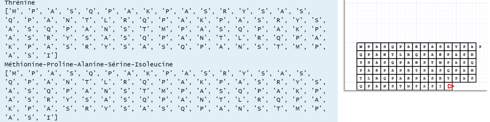

Portfolio pour Wassim Mahieddine , étudiant en informatique à l'Université de Montréal.
Études : Bac en Informatique (en cours, cote Z de 3.75)
Cours Réussis :
-
Design et developpement web (A-)
Introduction aux technologies web (HTML, CSS, JavaScript) et développement de sites statiques et dynamiques.
Compétences acquises : HTML, CSS, JavaScript, Bootstrap.
Projet de fin de session : Site Web dynamique pour une entreprise fictive.
-
Programmation 1 (A-)
Éléments de base d'un langage de programmation : types, expressions, énoncés conditionnels et itératifs, procédures, fonctions, paramètres, récursivité, tableaux, enregistrements, pointeurs et fichiers.
Compétences acquises : Python, Programmation orientée objet.
Projets de fin de session :
-
Projet 1
Programme de conversion ADN
Ce programme prend un brin d'ADN, crée son brin complémentaire, transcrit les gènes en ARN, puis traduit l'ARN en protéines,
qui sont ensuite affichées sous forme de chaîne de caractères et visualisées à l'aide d'une tortue graphique.Code disponible dans le fichier Projet 1
 -
Projet 2
Creation d'un jeu du demineur
Code disponible dans le fichier Projet 2
-
-
Calcul différentiel (A+)
-
Calcul intégral (B+)
-
Algèbre vectorielle et linéaire (B)
Travail en freelance
Voici quelques projets que j'ai réalisés en dehors de mes cours, pour des clients en freelance
-
kiswahililc.com
Site Web complet pour une école de Swahili, codé entierement en HTML, CSS, et Javascript, hébergé sur un serveur Microsoft Azure. Le projet est encore en cours, et a aussi été hébergé sur le compte GoDaddy du client afin qu'il puisse y apporter des modifications.
-
shanydiaz.com
Projet de rénovation d'un site Web pour une artiste. Site déja existant, mais qui ne réponds pas aux normes actuelles du web. Projet encore en cours, la seule page modifiée pour l'instant est la page "About Copy". (Elle est protégée par un mot de passe : "sadvdraft")
-
aesthedits.com
Site Web complet pour une agence de marketing web. Utilisation d'une plateforme en ligne pour le design et l'hébergement.
-
optionsdepth.com
Site Web complet pour une startup de trading, réalisé en équipe. Utilisation de HTML, CSS, JavaScript et Bootstrap.
Compétences
-
Langages de programmation
Python, HTML, CSS, JavaScript, Java
-
Frameworks
Bootstrap
-
Logiciels
Visual Studio Code, PyCharm, Spyder, Git, GitHub, Microsoft Office, Microsoft Azure, Gimp, Figma, Miro.
Lettre de motivation
En plus de maîtriser divers outils et processus informatiques, l'expérience que j'ai acquise chez BIXI au cours des quatre dernières années me permettra
de devenir un atout important pour votre équipe avec le temps, tout en comblant mon manque d'expérience en tant qu'informaticien.
J'ai une connaissance approfondie du système de BIXI, du fonctionnement de nos opérations, des enjeux auxquels nous faisons face, et surtout,
des besoins de nos clients. Je souhaite évoluer dans le domaine informatique, tout en apportant ma touche personnelle et mon expérience chez BIXI,
comme je l'ai fait depuis le début, en me surpassant constamment pour atteindre mes objectifs.
Je suis très motivé à apprendre et à aller toujours plus loin, et je suis prêt à faire le nécessaire pour devenir un élément essentiel de votre équipe,
tout en bénéficiant de votre expertise et de votre tutorat. Mon esprit d'équipe et ma collaboration avec mes collègues m'ont toujours permis d'évoluer
et d'en apprendre davantage, et j'aimerais maintenant avoir l'opportunité de poursuivre cette trajectoire au sein de votre équipe.
Je suis convaincu que je m'y plairais et que je pourrais rapidement me rendre utile.
Merci pour votre considération.
Cordialement,
Wassim.